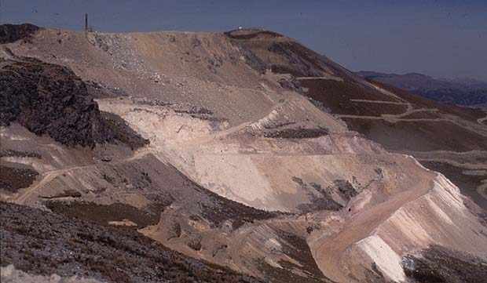
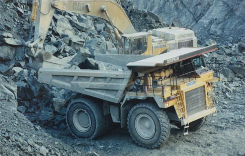
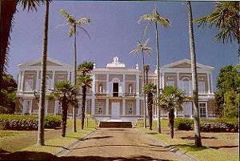
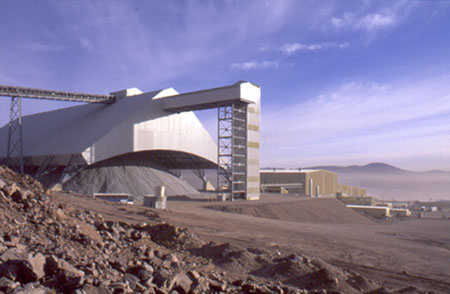
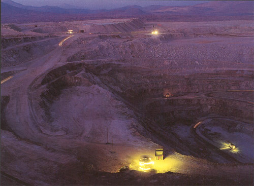

SITE MINIER
|

La SEMMP exploite un gisement minier situé dans le massif du Mont
Palatar, à 10 km au nord-est de la ville de Siango
|
EXTRACTION
|

La roche volcanique est brisée puis transportée au centre de
traitement où l'on extrait le précieux minerais appelé
"sianguite"
|
|
SEMMP
N°5, Rue de la Pyramide
Siango (République de Prya)
Transac : 101179

Le siège social du groupe SEMMP à Siango
|
ENTREPOSAGE
|

Une fois traité, le minerais est entreposé dans des silos géants,
prêt à être livré par camion aux industries clientes.
|
EMPLOI
|

La SEMMP a longtemps été le principal employeur de la province
de Siango. Parfois des équipes de mineurs se relaient jour et nuit..
|
|